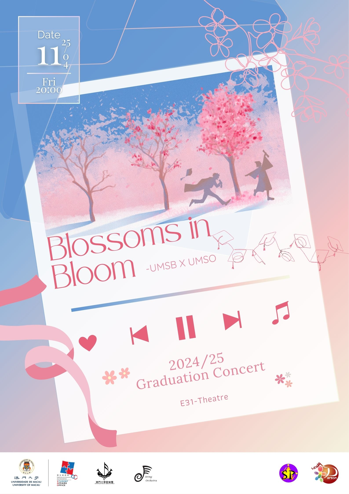

My Values and Beliefs
Lifelong Learning
I believe that learning is not confined to the classroom or specific stages of life. For me, pursuing multifaceted learning is to develop an individual’s ability to put things in perspective. Therefore, I actively seek out mentorship opportunities and look forward to feedback and guidance.
My Career Aspirations
Short-Term
Keep learning and teaching in various familiar areas, especially in programming projects.
Long-Term
Being able to integrate all the skills learned in different fields and create works that can inspire people.
My Interests and Hobbies
-For relaxing, also for learning-
- Social Media Surfing
- = Not only scrolling, but also observing and analyzing the content of the posts, the technologies used, and the related digital communities.
- Playing other music instruments
- = Looking for ways to combine old and new skills will not only help learn new skills, but also strengthen old ones.
- Drawing with combining ideas
- = My favorite way of recording is through drawing, which can integrate various concepts together, allowing me to think clearly and explore boldly.
- Listening various music
- = I enjoy exploring through music how elements can successfully blend together to create an inspiring and engaging effect.
My Blog Posts
Commissioned Arts:


Concert Posters(Affiliation with UMSB):



My Contact
I am willing to engage in discussions and exchanges regarding cooperation matters, as well as share ideas and opinions with like-minded individuals.
Feel free to click dc32552@um.edu.mo to email me!